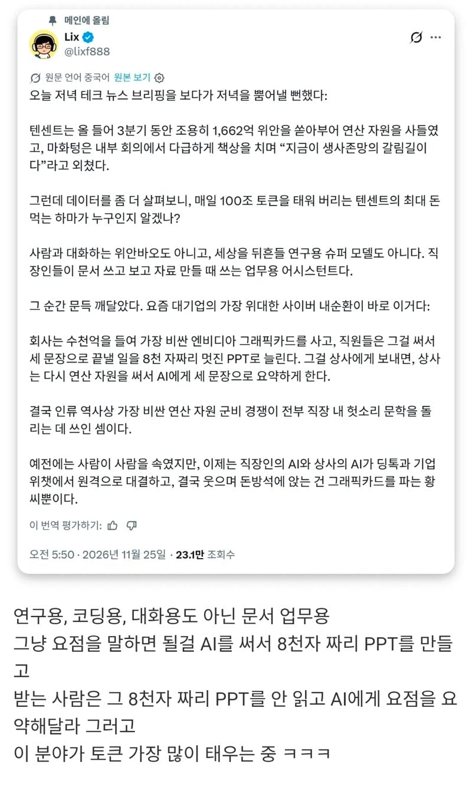

에이 어떻게 ppt 만드는데 가장 많이 쓰겠어
과장이 좀 심한거 같은데 ㅋ

에이 어떻게 ppt 만드는데 가장 많이 쓰겠어
과장이 좀 심한거 같은데 ㅋ
우리회사도 요새 ppt 다 클로드로 만들더라.. 디자인이 다 거기서 거기야.. 존나 돈아까움
그거 클로드가 해주니까 다른 일 더 할 수 있는거 아님?
어딴 논리의 흐름에 따라 어떤 자료가 들어가고 어딴 결론을 내고.. 그런게 사실 대부분의 시간을 쓰는데 그거 설명하고 만든거 보고 다시 고치고 하느니 그냥 만드는게 훨씬 나은 듯.. 근데 내가 프롬프트를 구리게 써서 그럴 수 있어 ㅋㅋ
그걸 사람이 만드는 시간은 안 아깝고?
좀 느낌이 다른데, 사람이 1시간즘 들여서 끝낼일을 클로드 사용하면 (10분 ai+10분 수정프롬프트)x3 = 1시간 이런느낌?
이젠 그냥md파일로 띄우거나
웹사이트만드는게훨 나은듯ㅋㅋㅋ
매체가 중요한게 아니라 내용이 중요한거라는 얘긴디...
결국 보고 혹은 발표시 원하는 논리 흐름이 있고 원하는 수준의 아웃풋을 내기까지 여러번 돌려야 해서 결국 소모시간은 엇비슷하게 나와서 무의미하게 토큰 낭비하는거 아니냐는거지
너 자리 대체 안당한거에 ㄱㅅ해라
뭐 말을 그렇게까지 하니?? ㅎㅎㅎ
프롬포트랑 의도를 좀 잘 잡아주면 확실히 깔끔하더라
솔직히 개꿀이긴 해
PPT 토큰 존나 소모해서 비효율적이긴해 ㅋㅋㅋㅋㅋㅋㅋㅋ
개꿀이긴해 나 ppt 진짜 저질스럽게 만드는데 ai 덕에 중박은 친다 이제...
지피티 야짤 만들어본거 다알음 ㅅㄱ
근데 AI가 PPT를 좆같이 만들긴함
내가 원하는걸 말했는데도 싹 다 스킵, 축약해버림
그건 니가 잘 못써서 그럼
복지의 신
근데 그냥 대화로 정리해줘 이런거는 토큰 소모 무제한 아니었어?
그럼 이제 인간을 없애면 되겠네 그럼 PPT를 작성하지 않아도 되고 그걸 다시 요약을 안해도 되니깐
이젠 정말 마크다운 뿐이야
자료 보면 아 ㅅㅂ 이거 또 클로드 딸깍했네 라고 느껴지는 자료가 있긴 함ㅋㅋㅋㅋ
그런 깔이 물씬 느껴지는 자료 보면 검수도 제대로 안 한 것 같아서 오히려 불안함
우린 아예대놓고 보고할때 클로드로 아티팩트 만들어서 달라고그럼
PPT이쁘게 꾸미는거 그게 엄청 중요한것인데
ai 시대에도 ppt가 필요한가 싶음 존나 비효율적임
그걸 가짜노동이라고부르지 ㅋㅋ
인간이 제일큰 병목임. 미군이였나 아마존이였나? Ppt 싹다없애고 걍10px 텍스트로만 통일했던데 그게 맞는거 같음.
쓸데없이 보고서에 시간들이는거보다는 AI사용이 나을수는 있음.
근데 그걸 일상적으로 계속 검수없이 사용하는게 ㅈㄴ 문제라보는데 그걸 지금 20대고 30대고 40대고 다하는중임 개판남
사실 이제 보고서도 ppt잘안씀
html로 만들었을때 애니메이션이나 시각적으로도 좋고 훨씬잘많듬
차라리 ppt 제작 + 요약 특화 AI를 만들어서 토큰 소모를 효율적으로 할 수 있도록 하는게 낫겠다.
ㅋㅋㅋ우리회사도 이럼
우리회사는 워드 한 장으로 끝낼 당연한 얘기를 빽빽~~~하게 채운 PPT20장 으로 만드는게 일 잘하는걸로 여김 ㅋㅋㅋㅋ 결국 모든 직원이 PPT만드느라 정작 아무도 실행을 못해서 실적 나락가는중인데 그럴수록 요구하는 PPT는 더 많아짐. 일단 모르겠고 Ai로 그 업무 좀 줄어든것만해도 살 거 같다
관리자중 그런 사람들이 많음...기존 실적을 가지고 보고를 받고 위에 보고를 하는데만 치중하고 자기 조직이 구체적으로 뭘해야하는지는 직원들이 알아서 제안해서 보고에 섞어줘야 뭐가 진행되는 그런 조직관리자
이런 사람들은 원래있던 자료 휘저어서 계속해서 새로운 보고를 원하기 때문에 일이 새롭게 진행되는게 아무것도 없고 위에서 호통치면 그때서야 뭔가를 하라는 보고를 생산할 것을 아래에 지시함
너 혹시 내 앞자리에 앉아있는 사람이니?
정확하게 지적했네. 일이 plan - DO - DO - DO - check 이 되어야 하는데. PLAAAAAAAAAAAN - do - PLAAAAAAAAN 임
???: 뭐? 일이 잘 안돼? 개선하기 위해서 뭐가 필요하고 어떤걸 할건지 보고서 가져와
??: 그래?? 그럼 이제 이걸 실행하기 위한 세부보고서를 가져와.
근데 진짜 궁금한게 보고서 읽는게 윗대가리들 업무인데 왜 안읽는거임?
맨날 두괄식으로 쳐 짜느라 ㅈㄴ 귀찮음 최대한 앞장에 요약해서 쓰고 뒷장에 풀어서쓰고
이게 뭐하는 짓이야
기승전결 a4 네장이상의 서류는 안주고 받는 회사 봤는데
의사결정 하나는 진짜 개빠르더라
심지어 요새는 a4한장 분량으로 압축해서 보고하라는 운동까지 시작한듯
ㅋㅋㅋㅋㅋㅋㅋ
인정
맞아 시발 그냥 요약해서주면될걸 굳이 한장짜리로 맨날 뭐 만들라고 하고
어짜피 줘도 대충 보다가 ai 줘서 관리도 ai가 하고 요약정리도 다시 ai가 함
뭐하는지모르겠다
ppt 솔직히 개같이 못만듦
잘만드는 ai없나
니가 잘 못해서 그럼. 잘하는 애들은 노트북LM만 가지고도 충분히 잘 만듬.
첫 제안용 간이 PPT 만들기에서 영역에서는 진짜 압도적으로 일하는 시간을 줄여줌.
근데 저 결과는 PPT 작업 자체가 토큰을 많이 먹는 구조라 그런 부분도 좀 있을거임.
+ 아직까지보 내부보고를 휘황찬란한 PPT로 요구하는 회사는 도태되는게 마따... Ai 훨씬 이전에도 문서간소화, 일을 위한 일을 줄이기는 꽤 큰 쟁점이었는데
근데 원래는 그 헛소리경쟁을 사람이 더 비효율적으로 하고 있었다면?
그게 나랏일에서는 더 심하고 관행이었다면?
결국 인류 역사상 가장 비싼 연산 자원 군비 경쟁이 전부 직장 내 헛소리 문학을 돌리는 데 쓰인 셈이다. <- ㅋㅋㅋㅋㅋㅋㅋㅋㅋㅋㅋ